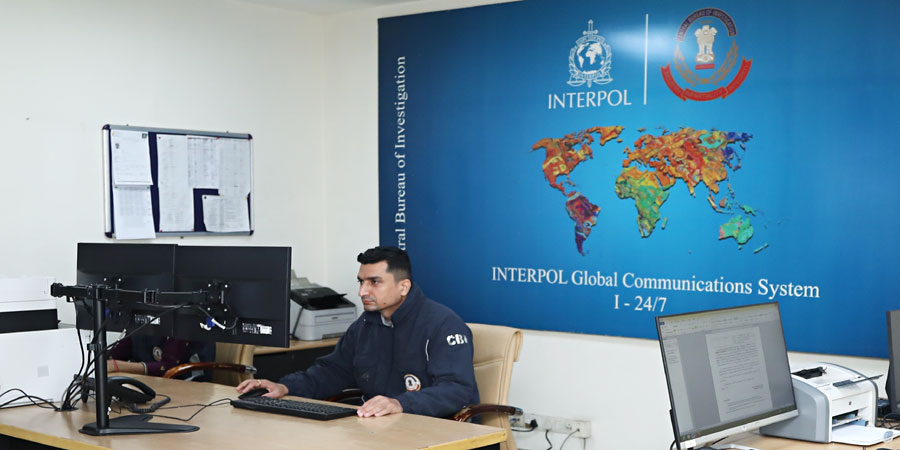

Industry, Impartiality and Integrity
To uphold the Constitution of India and law of the land through in-depth investigation and successful prosecution of offences; to provide leadership and direction to Police Forces and to act as the Nodal Agency for enhancing interstate and international cooperation in law enforcement.
During the early stages of World War-II, the then Government of India realized that the enormously expanded expenditure for purposes connected with the war had brought about a situation in which unscrupulous and antisocial persons, both officials and non-officials, were enriching themselves dishonestly at the cost of the public and the Government. It was felt that the Police and other Law Enforcement Agencies, which functioned under the State Governments, were not adequate to cope with the situation. It was under these circumstances, that the setting up of a separate organization to investigate offences connected with these transactions became a dire necessity. Consequently, the organization known as the Special Police Establishment (S.P.E.) was created under a Deputy Inspector General of Police by the Government of India, in 1941, by an executive order.
The functions of the SPE were to investigate cases of bribery and corruption in transactions with which the War and Supply Department of the Government of India was concerned. The superintendence of the SPE was vested in the then War and Supply Department.
Towards the end of 1942, the activities of the SPE were extended to include cases of corruption in the Railways also, presumably because the Railways were strategically concerned with the movement and supply of war material.
The Central Bureau of Investigation traces its origin to the Special Police Establishment (SPE) which was set up in 1941 by the Government of India. The functions of the SPE then were to investigate cases of bribery and corruption in transactions with the War & Supply Deptt. Of India during World War II. Superintendence of the S.P.E. was vested with the War Department. Even after the end of the War, the need for a Central Government agency to investigate cases of bribery and corruption by Central Government employees was felt. The Delhi Special Police Establishment Act was therefore brought into force in 1946. The DSPE acquired its popular current name, Central Bureau of Investigation (CBI), through a Home Ministry resolution dated 1.4.1963. Initially the offences that were notified by the Central Government related only to corruption by Central Govt. servants. In due course, with the setting up of a large number of public sector undertakings, the employees of these undertakings were also brought under CBI purview. Similarly, with the nationalisation of the banks in 1969, the Public Sector Banks and their employees also came within the ambit of the CBI.
The Central Bureau of Investigation (CBI), functioning under Dept. of Personnel, Ministry of Personnel, Pension & Public Grievances, Government of India, is the premier investigating police agency in India. It is an elite force playing a major role in preservation of values in public life and in ensuring the health of the national economy. It is also the nodal police agency in India, which coordinates investigation on behalf of Interpol Member countries. As the CBI, over the years, established a reputation for impartiality and competence, demands were made on it to take up investigation of more cases of conventional crime such as murder, kidnapping, terrorist crime, etc. Apart from this, even the Supreme court and the various High Courts of the country also started entrusting such cases for investigation to the CBI on petitions filed by aggrieved parties. CBI is not only a premier anti corruption investigative agency in India but it has also the experience of handling high profile conventional crimes, economic offences, banking frauds and crimes with international linkages. The CBI is designated as the National Central Bureau of India for ICPO-INTERPOL.
From 1965 onwards, the CBI has also been entrusted with the investigation of Economic Offences and important conventional crimes such as murders, kidnapping, terrorist crimes, etc., on a selective basis. The SPE initially had two Wings. They were the General Offences Wing (GOW) and Economic Offences Wing (EOW). The GOW dealt with cases of bribery and corruption involving the employees of Central Government and Public Sector Undertakings. The EOW dealt with cases of violation of various economic/fiscal laws. Under this set-up, the GOW had at least one Branch in each State and the EOW in the four metropolitan cities, i.e, Delhi, Madras, Bombay and Calcutta. These EOW Branches dealt with offences reported from the Regions, i.e, each Branch had jurisdiction over several States. Shri Kohli, Foounder of CBI told the delegates: "The public expects the highest standard from you both in efficiency and integrity. That faith has to be sustained. The motto of the CBI - Industry, Impartiality and Integrity: these must always guide your work. Loyalty to duty must come first, everywhere, at all times and in all circumstances."
The Digital CID (abbreviated as Digital Cyber Investigation Department) is the intelligence agency of J&K under Ministry of Home Affairs, India. The agency's primary function is gathering important information, counter cyber terrorism, catching unusual surrounding's activities including security of J&K. It is also involved in the security of all Law Enforcement Agencies of India.
"The public expects the highest standard from you both in efficiency and integrity. That faith has to be sustained. The motto of the CBI - Industry, Impartiality and Integrity: these must always guide your work. Loyalty to duty must come first, everywhere, at all times and in all circumstances. "" ~Shri. D.P. Kohli, The founder director of the CBI